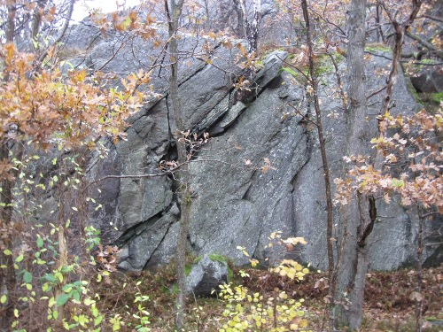
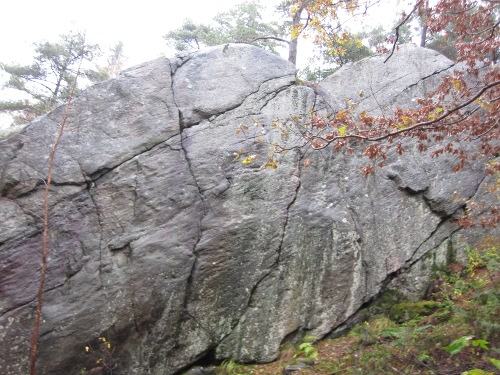

Lat: 57.75923 Long: 12.02543
<googlemap lat="57.75923" lon="12.02543" zoom="9" type="map"> 57.75923,12.02543,Kortedala </googlemap>
Det finns några gjorda leder med lite ovanlig klättring. Dessutom finns det potential för några leder till på väggarna runt omkring huvudklippan. Klippan ligger i en vacker lövskog och det finns en bågskyttebana framför huvudklippan.
Parkera bakom Kortedala brandstation, promenera ner för backen ca. 400 meter tills du får syn berget på höger sida av vägen. Kollektivt, åk spårvagn och kliv av vid Kortedala torg. Följ Tideräkningsgatan i riktning mot Angered tills du ser brandstationen, fortsätt förbi brandstationen ca. 400 meter tills du får syn på berget på höger sida av vägen. Total promenadsträcka ca. 1 km.
För att komma till Burmaklippan och till dem söder om denna kan man antingen följa kraftledningen från kolonilotterna eller leta sig ner till dem via stigarna från brandstationen eller från Dagjämingsgatan. Parkera inte vid kolonilotterna.
Inga leder är utvecklade på denna vägg, ca. 10 meter högt.
Väggen bakom bågskyttebanorna. Berget är ca. 15-18 meter högt och ungefär 100 meter brett. Göteborgsföraren ger en bra hänvisning och det går lätt att hitta lederna.
Den första lilla vägg du ser när du kommer från Tideräkningsgatan. Bör kanske kallas Tidräkningsväggen? Ungefär 10 meter högt. Potential finns för fler leder och boulderproblem. Se upp för ilskna myror.
Kategori:Göteborg
Fil:Burmaklippan.jpg
Parkera vid brandstationen, gå ner till koloniområded och följ krafledningarna. Parkera inte i koloniområdet. Alternativt, gå från Dagjämningsgatan genom skogen.
Fortsätter man 100 meter mer söderut dyker ytterligare en vägg upp, samma höjd och lutning som de övriga, men bredare. Hit tar man sig enklast från Dagjämningsgatan.
Följ stigen från Dagjämningsgatan ner för backen tills du kommer till ett rostigt stängsel. Där ligger följande leder:
Dessa leder ligger ca 50 meter till höger om de föregående lederna:
Dessa leder ligger ca 50 meter till höger om föregående lederna, ungefär där stigen är som brantast:
Vid Kalendervägen 38 i Kortedala finns tre tradleder. De finns markerade med T1, T2 och T3 på en topo på Gbg bouldering online tillsammans med ett antal boulderproblem. Se
.